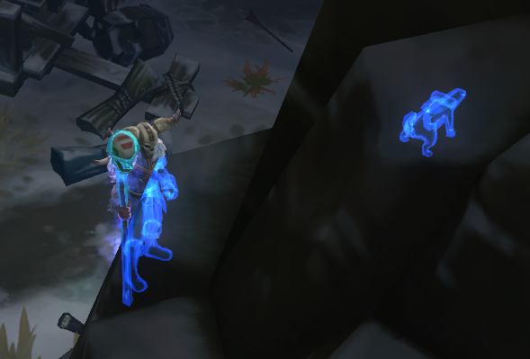

I’m trying to do an effect like the occlusion ghosting that Torchlight 2 does when a character or enemy is behind a wall or other blocking object. A blue or pink silhouette is drawn so that even if things are not visible from the camera view, you can still see them. Here is an example: 
My first thought was to render all static level geometry first, then render the ghosts using no depthwrite and depthfunc=greater, then render the normally lit solid passes of the objects. However, I’m not really sure how I would do this.
My second thought was to draw the solid passes normally, then during alpha pass draw the model again using a “ghost” material with depthfunc=greater and a small, arbitrarily chosen negative depth bias to keep the ghost for parts of a character occluded by the character’s body from overwriting the solid pass. This works somewhat, although there are weird edge cases, such as when the character is standing very near the occluder, near enough that depth-bias is no longer greater than the depth in the depth buffer.
(One other issue related to this is one I will probably file a bug report for, once I have done some more testing. To do the ghost pass, I create another AnimatedModel component into the node, specifying the ghost material. However, when I do this I notice weird glitches in the animation. 90% of the time, the animation is fine. But, for example, when standing there playing the looping idle animation I will get very rapid, occasional twitches of feet and hands, ad if the underlying skeleton were going haywire then quickly being corrected back to what it should be. I’m unsure what could be causing that.)
At any rate, does anybody have any better ideas for how I might accomplish this?